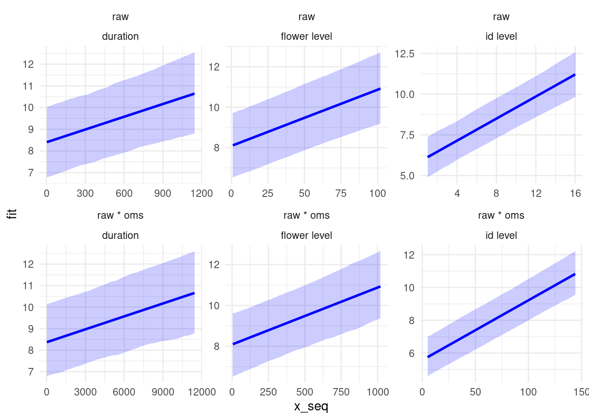

Mating success
Article #1: oms estimation
Visualize the pipeline analyses:
| session | id | sr_fem_total | nb_flo | nb_flo_open | nb_flo_all | height_max | height_mean | nb_stem | nb_poll_focal | oms_fem_co5 | oms_fem_co10 | oms_fem_co20 | oms_mal_co5 | oms_mal_co10 | oms_mal_co20 |
|---|---|---|---|---|---|---|---|---|---|---|---|---|---|---|---|
| 1.FA1 | 1.FA1.01 | 56 | 14 | 20 | 23 | 40.4 | 36.73333 | 3 | 1 | 9 | 9 | 9 | 9 | 9 | 9 |
| 1.FA1 | 1.FA1.02 | 119 | 19 | 21 | 26 | 31.5 | 24.40000 | 6 | 1 | 6 | 8 | 9 | 6 | 8 | 9 |
| 1.FA1 | 1.FA1.03 | 38 | 11 | 13 | 13 | 37.4 | 35.45000 | 2 | 1 | 8 | 8 | 8 | 9 | 9 | 9 |
| 1.FA1 | 1.FA1.04 | 169 | 19 | 23 | 28 | 36.4 | 33.33333 | 3 | 1 | 8 | 9 | 9 | 9 | 9 | 9 |
| 1.FA1 | 1.FA1.05 | 29 | 12 | 14 | 18 | 36.5 | 31.63333 | 3 | 1 | 8 | 9 | 9 | 6 | 8 | 8 |
| 1.FA1 | 1.FA1.06 | 130 | 15 | 22 | 30 | 40.3 | 34.35000 | 4 | 1 | 6 | 9 | 9 | 8 | 8 | 9 |
| session | people | time | duration | ID_full | ID | noHp | flow | id_flow | id_flow_full | ttt |
|---|---|---|---|---|---|---|---|---|---|---|
| 1.FA1 | Jeanne | 32.768 | 2.815 | 1.FA1.01 | 1 | 1 | 3 | 1_1_3 | 1.FA1.01_1_3 | 1_low |
| 1.FA1 | Jeanne | 36.822 | 3.327 | 1.FA1.06 | 6 | 2 | NR | 6_2_NR | 1.FA1.06_2_NR | 1_low |
| 1.FA1 | Jeanne | 56.448 | 8.191 | 1.FA1.03 | 3 | 1 | 8 | 3_1_8 | 1.FA1.03_1_8 | 1_low |
| 1.FA1 | Jeanne | 67.371 | 12.628 | 1.FA1.01 | 1 | 1 | NR | 1_1_NR | 1.FA1.01_1_NR | 1_low |
| 1.FA1 | Jeanne | 80.000 | 1.023 | 1.FA1.01 | 1 | 1 | 3 | 1_1_3 | 1.FA1.01_1_3 | 1_low |
| 1.FA1 | Jeanne | 81.024 | 28.650 | 1.FA1.01 | 1 | 1 | 4 | 1_1_4 | 1.FA1.01_1_4 | 1_low |
What is the best proxy for observational mating success?
We have conducted an experiment in which we surveyed each pollinator one by one along the visit sequences, up to the flower scale. By making assumptions about the carry-over (i.e., the number of successive flower visits during which pollen export remains effective), we are able to estimate the number of observational sexual partners, both for the female and the male function. We assume that the carry-over is about 10, based on a previous study on the sister species Brassica napus: for the male function, 91% of the seeds were sired in the first four flowers visited after a focal individual, and no seeds were sired after the 14th flower visited [1].
Now, we imagine a more common experiment in natura in which we cannot follow the pollinators one by one. We could rather observe plant by plant. We then have the following data :
- the number of arrivals (female function) / departures (male function) per individual, which are highly correlated = number of contacts (which may be independent or not) per individual
- the total number of visits per individual
- the total visit duration per individual (but not useful here, as we only formulate hypotheses about visit sequences, without getting interested in the number of pollen grains exported/deposited): we leave that aside
We can imagine that each observer notes the time of the pollinator’s arrival on each plant (start), to order events of contacts:
| session | people | id | consecutive_contact | start | nb_visit | duration | no_contact_with_id |
|---|---|---|---|---|---|---|---|
| 1.FA1 | Jeanne | 1.FA1.01 | 1 | 32.768 | 1 | 2.815 | 1 |
| 1.FA1 | Jeanne | 1.FA1.06 | 2 | 36.822 | 1 | 3.327 | 1 |
| 1.FA1 | Jeanne | 1.FA1.03 | 3 | 56.448 | 1 | 8.191 | 1 |
| 1.FA1 | Jeanne | 1.FA1.01 | 4 | 67.371 | 9 | 105.677 | 2 |
| 1.FA1 | Jeanne | 1.FA1.06 | 5 | 183.382 | 2 | 10.877 | 2 |
| 1.FA1 | Jeanne | 1.FA1.01 | 6 | 201.195 | 2 | 13.056 | 3 |
But then, what to do with this? We don’t know the identity of the pollinator,
so it is difficult to infer anything from the visit order…
Something more realistic is to start from data at the individual level without inferring anything about the effect of visit order:
| session | id | nb_contact | nb_visit | dur_visit |
|---|---|---|---|---|
| 1.FA1 | 1.FA1.01 | 10 | 25 | 213.846 |
| 1.FA1 | 1.FA1.02 | 5 | 14 | 76.402 |
| 1.FA1 | 1.FA1.03 | 8 | 17 | 84.098 |
| 1.FA1 | 1.FA1.04 | 8 | 23 | 118.506 |
| 1.FA1 | 1.FA1.05 | 6 | 12 | 65.717 |
| 1.FA1 | 1.FA1.06 | 8 | 29 | 157.325 |
To discuss: something smart to do with contact order?
Then, we can summarize data at the scale of the observation session. At least useful to compare
populations between them? We can get the following data:
- Total number of contacts with id
- Total number of visits
- Total number of visited individuals (maximum oms)
- Total number of pollinators (but see below)
- Total visit duration (but again, we leave that aside)
| session | max_oms | total_nb_contact | total_nb_visit | total_duration | total_nb_poll |
|---|---|---|---|---|---|
| 1.FA1 | 10 | 73 | 197 | 1196.761 | 1 |
| 1.FA2 | 8 | 27 | 124 | 1098.092 | 1 |
| 1.FO1 | 10 | 62 | 486 | 3642.479 | 4 |
| 1.FO2 | 10 | 42 | 373 | 3178.549 | 3 |
| 1.MO1 | 9 | 50 | 185 | 1509.840 | 2 |
| 1.MO2 | 8 | 11 | 109 | 1463.275 | 2 |
Because, imagine that one individual had a lot of contacts with pollinators, but
that only a few other individuals were visited: this should weaken the link between
the number of contacts per id and oms.
Using the data table with contacts ordered by time, we could imagine estimating
the diversity of potential sexual partners according to their relative frequency
(e.g., using Hill/Shannon/Simpson indices).
NB: In our experiment, we know for sure the number of pollinators that visited
plants. In natura, it would be much more difficult, but we could at least get an estimation
based on the species diversity that we observed (i.e., if we observed
two contacts by Bombus and one contact by Apis, there are at least two different
pollinators).
We now investigate which proxy best correlates with the observational number of mates.
We estimate the latter using a carry-over of 10, as well as 5 and 20. We thus
have two main proxies:
- the number of contacts per individual
- the number of contacts per individual
- the total number of visits per individual
- For the number of contacts per individual, we can explore its correlation with
oms using:
- index_A1: the raw number of contacts per individual
- index_A2: relativized by the total number of contacts in the session
- index_A3: multiplied by the total number of potential sexual partners
- index_A4: combining index_A2 and index_A3
- For the total number of visits per individual:
- index_B1: the raw number of visits per individual
- index_B2: relativized by the total number of visits in the session
- index_B3: multiplied by the total number of potential sexual partners
- index_B4: combining index_B2 and index_B3
After discussion with Jeanne, we also explore the same proxies based on total visit duration per individual:
- For the total visit duration per individual:
- index_C1: the raw total visit duration per individual
- index_C2: relativized by the total visit duration in the session
- index_C3: multiplied by the total number of potential sexual partners
- index_C4: combining index_C2 and index_C3
| session | id | sr_fem_total | nb_flo | nb_flo_open | nb_flo_all | height_max | height_mean | nb_stem | nb_poll_focal | oms_fem_co5 | oms_fem_co10 | oms_fem_co20 | oms_mal_co5 | oms_mal_co10 | oms_mal_co20 | nb_contact | nb_visit | dur_visit | max_oms | total_nb_contact | total_nb_visit | total_duration | total_nb_poll | index_A1 | index_A2 | index_A3 | index_A4 | index_A5 | index_B1 | index_B2 | index_B3 | index_B4 | index_B5 | index_C1 | index_C2 | index_C3 | index_C4 | index_C5 |
|---|---|---|---|---|---|---|---|---|---|---|---|---|---|---|---|---|---|---|---|---|---|---|---|---|---|---|---|---|---|---|---|---|---|---|---|---|---|---|
| 1.FA1 | 1.FA1.01 | 56 | 14 | 20 | 23 | 40.4 | 36.73333 | 3 | 1 | 9 | 9 | 9 | 9 | 9 | 9 | 10 | 25 | 213.846 | 10 | 73 | 197 | 1196.761 | 1 | 10 | 0.1369863 | 100 | 1.3698630 | 1.3698630 | 25 | 0.1269036 | 250 | 1.2690355 | 1.2690355 | 213.846 | 0.1786873 | 2138.46 | 1.7868731 | 1.7868731 |
| 1.FA1 | 1.FA1.02 | 119 | 19 | 21 | 26 | 31.5 | 24.40000 | 6 | 1 | 6 | 8 | 9 | 6 | 8 | 9 | 5 | 14 | 76.402 | 10 | 73 | 197 | 1196.761 | 1 | 5 | 0.0684932 | 50 | 0.6849315 | 0.6849315 | 14 | 0.0710660 | 140 | 0.7106599 | 0.7106599 | 76.402 | 0.0638406 | 764.02 | 0.6384065 | 0.6384065 |
| 1.FA1 | 1.FA1.03 | 38 | 11 | 13 | 13 | 37.4 | 35.45000 | 2 | 1 | 8 | 8 | 8 | 9 | 9 | 9 | 8 | 17 | 84.098 | 10 | 73 | 197 | 1196.761 | 1 | 8 | 0.1095890 | 80 | 1.0958904 | 1.0958904 | 17 | 0.0862944 | 170 | 0.8629442 | 0.8629442 | 84.098 | 0.0702713 | 840.98 | 0.7027134 | 0.7027134 |
| 1.FA1 | 1.FA1.04 | 169 | 19 | 23 | 28 | 36.4 | 33.33333 | 3 | 1 | 8 | 9 | 9 | 9 | 9 | 9 | 8 | 23 | 118.506 | 10 | 73 | 197 | 1196.761 | 1 | 8 | 0.1095890 | 80 | 1.0958904 | 1.0958904 | 23 | 0.1167513 | 230 | 1.1675127 | 1.1675127 | 118.506 | 0.0990223 | 1185.06 | 0.9902228 | 0.9902228 |
| 1.FA1 | 1.FA1.05 | 29 | 12 | 14 | 18 | 36.5 | 31.63333 | 3 | 1 | 8 | 9 | 9 | 6 | 8 | 8 | 6 | 12 | 65.717 | 10 | 73 | 197 | 1196.761 | 1 | 6 | 0.0821918 | 60 | 0.8219178 | 0.8219178 | 12 | 0.0609137 | 120 | 0.6091371 | 0.6091371 | 65.717 | 0.0549124 | 657.17 | 0.5491238 | 0.5491238 |
| 1.FA1 | 1.FA1.06 | 130 | 15 | 22 | 30 | 40.3 | 34.35000 | 4 | 1 | 6 | 9 | 9 | 8 | 8 | 9 | 8 | 29 | 157.325 | 10 | 73 | 197 | 1196.761 | 1 | 8 | 0.1095890 | 80 | 1.0958904 | 1.0958904 | 29 | 0.1472081 | 290 | 1.4720812 | 1.4720812 | 157.325 | 0.1314590 | 1573.25 | 1.3145900 | 1.3145900 |
Okay now we proceed to the analyses.
Linear models and R2
A3
Data: data_proxy_longer
Models:
linear_models_oms_proxy$mod_A3_null_1: oms_co10 ~ index_A3 + sex + (1 | session) + (1 | session:id)
linear_models_oms_proxy$mod_A3: oms_co10 ~ index_A3 * sex + (1 | session) + (1 | session:id)
npar AIC BIC logLik deviance Chisq
linear_models_oms_proxy$mod_A3_null_1 6 854.81 876.53 -421.4 842.81
linear_models_oms_proxy$mod_A3 7 856.81 882.15 -421.4 842.81 0.0023
Df Pr(>Chisq)
linear_models_oms_proxy$mod_A3_null_1
linear_models_oms_proxy$mod_A3 1 0.9621Data: data_proxy_longer
Models:
linear_models_oms_proxy$mod_A3_null_2: oms_co10 ~ index_A3 + (1 | session) + (1 | session:id)
linear_models_oms_proxy$mod_A3_null_1: oms_co10 ~ index_A3 + sex + (1 | session) + (1 | session:id)
npar AIC BIC logLik deviance Chisq
linear_models_oms_proxy$mod_A3_null_2 5 852.81 870.91 -421.4 842.81
linear_models_oms_proxy$mod_A3_null_1 6 854.81 876.53 -421.4 842.81 0
Df Pr(>Chisq)
linear_models_oms_proxy$mod_A3_null_2
linear_models_oms_proxy$mod_A3_null_1 1 1Linear mixed model fit by REML. t-tests use Satterthwaite's method [
lmerModLmerTest]
Formula: oms_co10 ~ index_A3 + (1 | session) + (1 | session:id)
Data: data_proxy_longer
REML criterion at convergence: 852.4
Scaled residuals:
Min 1Q Median 3Q Max
-2.72576 -0.46200 0.09061 0.55288 2.48496
Random effects:
Groups Name Variance Std.Dev.
session:id (Intercept) 0.2215 0.4707
session (Intercept) 2.5691 1.6029
Residual 0.8188 0.9049
Number of obs: 276, groups: session:id, 138; session, 16
Fixed effects:
Estimate Std. Error df t value Pr(>|t|)
(Intercept) 4.166e+00 4.293e-01 1.762e+01 9.706 1.72e-08 ***
index_A3 3.652e-02 3.366e-03 1.271e+02 10.851 < 2e-16 ***
---
Signif. codes: 0 '***' 0.001 '**' 0.01 '*' 0.05 '.' 0.1 ' ' 1
Correlation of Fixed Effects:
(Intr)
index_A3 -0.320# R2 for Mixed Models
Conditional R2: 0.824
Marginal R2: 0.226A1
Data: data_proxy_longer
Models:
linear_models_oms_proxy$mod_A1_null_1: oms_co10 ~ index_A1 + sex + (1 | session) + (1 | session:id)
linear_models_oms_proxy$mod_A1: oms_co10 ~ index_A1 * sex + (1 | session) + (1 | session:id)
npar AIC BIC logLik deviance
linear_models_oms_proxy$mod_A1_null_1 6 852.63 874.35 -420.31 840.63
linear_models_oms_proxy$mod_A1 7 854.63 879.97 -420.31 840.63
Chisq Df Pr(>Chisq)
linear_models_oms_proxy$mod_A1_null_1
linear_models_oms_proxy$mod_A1 0.0023 1 0.9618Data: data_proxy_longer
Models:
linear_models_oms_proxy$mod_A1_null_2: oms_co10 ~ index_A1 + (1 | session) + (1 | session:id)
linear_models_oms_proxy$mod_A1_null_1: oms_co10 ~ index_A1 + sex + (1 | session) + (1 | session:id)
npar AIC BIC logLik deviance Chisq
linear_models_oms_proxy$mod_A1_null_2 5 850.63 868.73 -420.31 840.63
linear_models_oms_proxy$mod_A1_null_1 6 852.63 874.35 -420.31 840.63 0
Df Pr(>Chisq)
linear_models_oms_proxy$mod_A1_null_2
linear_models_oms_proxy$mod_A1_null_1 1 1Linear mixed model fit by REML. t-tests use Satterthwaite's method [
lmerModLmerTest]
Formula: oms_co10 ~ index_A1 + (1 | session) + (1 | session:id)
Data: data_proxy_longer
REML criterion at convergence: 845.6
Scaled residuals:
Min 1Q Median 3Q Max
-2.66842 -0.45841 0.09952 0.57970 2.48953
Random effects:
Groups Name Variance Std.Dev.
session:id (Intercept) 0.1952 0.4419
session (Intercept) 3.1201 1.7664
Residual 0.8188 0.9049
Number of obs: 276, groups: session:id, 138; session, 16
Fixed effects:
Estimate Std. Error df t value Pr(>|t|)
(Intercept) 4.14978 0.46709 17.43564 8.884 6.93e-08 ***
index_A1 0.33783 0.03057 124.40146 11.050 < 2e-16 ***
---
Signif. codes: 0 '***' 0.001 '**' 0.01 '*' 0.05 '.' 0.1 ' ' 1
Correlation of Fixed Effects:
(Intr)
index_A1 -0.292# R2 for Mixed Models
Conditional R2: 0.837
Marginal R2: 0.176B3
Data: data_proxy_longer
Models:
linear_models_oms_proxy$mod_B3_null_1: oms_co10 ~ index_B3 + sex + (1 | session) + (1 | session:id)
linear_models_oms_proxy$mod_B3: oms_co10 ~ index_B3 * sex + (1 | session) + (1 | session:id)
npar AIC BIC logLik deviance
linear_models_oms_proxy$mod_B3_null_1 6 914.65 936.37 -451.32 902.65
linear_models_oms_proxy$mod_B3 7 916.54 941.88 -451.27 902.54
Chisq Df Pr(>Chisq)
linear_models_oms_proxy$mod_B3_null_1
linear_models_oms_proxy$mod_B3 0.1103 1 0.7398Data: data_proxy_longer
Models:
linear_models_oms_proxy$mod_B3_null_2: oms_co10 ~ index_B3 + (1 | session) + (1 | session:id)
linear_models_oms_proxy$mod_B3_null_1: oms_co10 ~ index_B3 + sex + (1 | session) + (1 | session:id)
npar AIC BIC logLik deviance Chisq
linear_models_oms_proxy$mod_B3_null_2 5 912.65 930.75 -451.32 902.65
linear_models_oms_proxy$mod_B3_null_1 6 914.65 936.37 -451.32 902.65 0
Df Pr(>Chisq)
linear_models_oms_proxy$mod_B3_null_2
linear_models_oms_proxy$mod_B3_null_1 1 1Linear mixed model fit by REML. t-tests use Satterthwaite's method [
lmerModLmerTest]
Formula: oms_co10 ~ index_B3 + (1 | session) + (1 | session:id)
Data: data_proxy_longer
REML criterion at convergence: 915.4
Scaled residuals:
Min 1Q Median 3Q Max
-2.6069 -0.4378 0.1216 0.5947 2.6681
Random effects:
Groups Name Variance Std.Dev.
session:id (Intercept) 0.5585 0.7473
session (Intercept) 4.1445 2.0358
Residual 0.8188 0.9049
Number of obs: 276, groups: session:id, 138; session, 16
Fixed effects:
Estimate Std. Error df t value Pr(>|t|)
(Intercept) 5.087e+00 5.271e-01 1.596e+01 9.650 4.59e-08 ***
index_B3 2.783e-03 5.218e-04 1.247e+02 5.333 4.39e-07 ***
---
Signif. codes: 0 '***' 0.001 '**' 0.01 '*' 0.05 '.' 0.1 ' ' 1
Correlation of Fixed Effects:
(Intr)
index_B3 -0.203# R2 for Mixed Models
Conditional R2: 0.860
Marginal R2: 0.055B1
Data: data_proxy_longer
Models:
linear_models_oms_proxy$mod_B1_null_1: oms_co10 ~ index_B1 + sex + (1 | session) + (1 | session:id)
linear_models_oms_proxy$mod_B1: oms_co10 ~ index_B1 * sex + (1 | session) + (1 | session:id)
npar AIC BIC logLik deviance
linear_models_oms_proxy$mod_B1_null_1 6 913.09 934.81 -450.54 901.09
linear_models_oms_proxy$mod_B1 7 915.01 940.35 -450.51 901.01
Chisq Df Pr(>Chisq)
linear_models_oms_proxy$mod_B1_null_1
linear_models_oms_proxy$mod_B1 0.0761 1 0.7827Data: data_proxy_longer
Models:
linear_models_oms_proxy$mod_B1_null_2: oms_co10 ~ index_B1 + (1 | session) + (1 | session:id)
linear_models_oms_proxy$mod_B1_null_1: oms_co10 ~ index_B1 + sex + (1 | session) + (1 | session:id)
npar AIC BIC logLik deviance Chisq
linear_models_oms_proxy$mod_B1_null_2 5 911.09 929.19 -450.54 901.09
linear_models_oms_proxy$mod_B1_null_1 6 913.09 934.81 -450.54 901.09 0
Df Pr(>Chisq)
linear_models_oms_proxy$mod_B1_null_2
linear_models_oms_proxy$mod_B1_null_1 1 1Linear mixed model fit by REML. t-tests use Satterthwaite's method [
lmerModLmerTest]
Formula: oms_co10 ~ index_B1 + (1 | session) + (1 | session:id)
Data: data_proxy_longer
REML criterion at convergence: 909.3
Scaled residuals:
Min 1Q Median 3Q Max
-2.5917 -0.4375 0.1234 0.5714 2.6781
Random effects:
Groups Name Variance Std.Dev.
session:id (Intercept) 0.5418 0.7361
session (Intercept) 4.2991 2.0734
Residual 0.8188 0.9049
Number of obs: 276, groups: session:id, 138; session, 16
Fixed effects:
Estimate Std. Error df t value Pr(>|t|)
(Intercept) 5.046e+00 5.369e-01 1.611e+01 9.398 6.10e-08 ***
index_B1 2.776e-02 5.041e-03 1.238e+02 5.506 2.02e-07 ***
---
Signif. codes: 0 '***' 0.001 '**' 0.01 '*' 0.05 '.' 0.1 ' ' 1
Correlation of Fixed Effects:
(Intr)
index_B1 -0.207# R2 for Mixed Models
Conditional R2: 0.863
Marginal R2: 0.052C3
Data: data_proxy_longer
Models:
linear_models_oms_proxy$mod_C3_null_1: oms_co10 ~ index_C3 + sex + (1 | session) + (1 | session:id)
linear_models_oms_proxy$mod_C3: oms_co10 ~ index_C3 * sex + (1 | session) + (1 | session:id)
npar AIC BIC logLik deviance
linear_models_oms_proxy$mod_C3_null_1 6 927.42 949.14 -457.71 915.42
linear_models_oms_proxy$mod_C3 7 929.39 954.73 -457.69 915.39
Chisq Df Pr(>Chisq)
linear_models_oms_proxy$mod_C3_null_1
linear_models_oms_proxy$mod_C3 0.0346 1 0.8525Data: data_proxy_longer
Models:
linear_models_oms_proxy$mod_C3_null_2: oms_co10 ~ index_C3 + (1 | session) + (1 | session:id)
linear_models_oms_proxy$mod_C3_null_1: oms_co10 ~ index_C3 + sex + (1 | session) + (1 | session:id)
npar AIC BIC logLik deviance Chisq
linear_models_oms_proxy$mod_C3_null_2 5 925.42 943.52 -457.71 915.42
linear_models_oms_proxy$mod_C3_null_1 6 927.42 949.14 -457.71 915.42 0
Df Pr(>Chisq)
linear_models_oms_proxy$mod_C3_null_2
linear_models_oms_proxy$mod_C3_null_1 1 1Linear mixed model fit by REML. t-tests use Satterthwaite's method [
lmerModLmerTest]
Formula: oms_co10 ~ index_C3 + (1 | session) + (1 | session:id)
Data: data_proxy_longer
REML criterion at convergence: 932.6
Scaled residuals:
Min 1Q Median 3Q Max
-2.6065 -0.4493 0.1026 0.5665 2.6649
Random effects:
Groups Name Variance Std.Dev.
session:id (Intercept) 0.6462 0.8038
session (Intercept) 4.7612 2.1820
Residual 0.8188 0.9049
Number of obs: 276, groups: session:id, 138; session, 16
Fixed effects:
Estimate Std. Error df t value Pr(>|t|)
(Intercept) 5.351e+00 5.589e-01 1.550e+01 9.575 6.63e-08 ***
index_C3 1.998e-04 5.356e-05 1.230e+02 3.730 0.000291 ***
---
Signif. codes: 0 '***' 0.001 '**' 0.01 '*' 0.05 '.' 0.1 ' ' 1
Correlation of Fixed Effects:
(Intr)
index_C3 -0.147
fit warnings:
Some predictor variables are on very different scales: consider rescaling# R2 for Mixed Models
Conditional R2: 0.871
Marginal R2: 0.022C1
Data: data_proxy_longer
Models:
linear_models_oms_proxy$mod_C1_null_1: oms_co10 ~ index_C1 + sex + (1 | session) + (1 | session:id)
linear_models_oms_proxy$mod_C1: oms_co10 ~ index_C1 * sex + (1 | session) + (1 | session:id)
npar AIC BIC logLik deviance
linear_models_oms_proxy$mod_C1_null_1 6 926.94 948.66 -457.47 914.94
linear_models_oms_proxy$mod_C1 7 928.93 954.27 -457.46 914.93
Chisq Df Pr(>Chisq)
linear_models_oms_proxy$mod_C1_null_1
linear_models_oms_proxy$mod_C1 0.0086 1 0.9262Data: data_proxy_longer
Models:
linear_models_oms_proxy$mod_C1_null_2: oms_co10 ~ index_C1 + (1 | session) + (1 | session:id)
linear_models_oms_proxy$mod_C1_null_1: oms_co10 ~ index_C1 + sex + (1 | session) + (1 | session:id)
npar AIC BIC logLik deviance Chisq
linear_models_oms_proxy$mod_C1_null_2 5 924.94 943.04 -457.47 914.94
linear_models_oms_proxy$mod_C1_null_1 6 926.94 948.66 -457.47 914.94 0
Df Pr(>Chisq)
linear_models_oms_proxy$mod_C1_null_2
linear_models_oms_proxy$mod_C1_null_1 1 1Linear mixed model fit by REML. t-tests use Satterthwaite's method [
lmerModLmerTest]
Formula: oms_co10 ~ index_C1 + (1 | session) + (1 | session:id)
Data: data_proxy_longer
REML criterion at convergence: 927.6
Scaled residuals:
Min 1Q Median 3Q Max
-2.6144 -0.4473 0.1076 0.5690 2.6724
Random effects:
Groups Name Variance Std.Dev.
session:id (Intercept) 0.6389 0.7993
session (Intercept) 4.8708 2.2070
Residual 0.8188 0.9049
Number of obs: 276, groups: session:id, 138; session, 16
Fixed effects:
Estimate Std. Error df t value Pr(>|t|)
(Intercept) 5.332e+00 5.654e-01 1.558e+01 9.431 7.75e-08 ***
index_C1 1.962e-03 5.159e-04 1.226e+02 3.803 0.000224 ***
---
Signif. codes: 0 '***' 0.001 '**' 0.01 '*' 0.05 '.' 0.1 ' ' 1
Correlation of Fixed Effects:
(Intr)
index_C1 -0.151# R2 for Mixed Models
Conditional R2: 0.873
Marginal R2: 0.022Conditionnal R2 (fixed and random effects) :
- A3 : 0.8243104
- A1 : 0.8368409
- B3 : 0.8598035
- B1 : 0.8628357
- C3 : 0.8714332
- C1 : 0.8734325
Marginal R2 (fixed effects only) :
- A3 : 0.225549
- A1 : 0.1762318
- B3 : 0.0545803
- B1 : 0.0519268
- C3 : 0.0224185
- C1 : 0.0217909
Based on marginal, A3 is the best proxy, but based on conditionnal, C1 is better. Ask François why
AIC
A3
[1] 878.2016A1
[1] 866.7982B3
[1] 945.1387B1
[1] 934.4144C3
[1] 945.1387C1
[1] 934.4144Best AIC is for A1.
Conclusions
To summarize, the number of contacts, and the number of contacts x max_oms, seems to be both good predictors of observational mating success. To do : Bateman gradients with the number of contacts to see if we obtain the same results? Necessary?
Plots

Do we recover the same results than when using oms?
Which traits are under sexual selection?
We measured:
nb_flo: the number of “receptive” flowers
nb_flo_open: the number of opened flowers (including very new ones)
nb_flo_all: the total number of flowers (including very new and old ones)
height_max: the height of the highest flower
height_mean: the mean height of the highest flowers on each stem
nb_stem: the number of stems
Best way to do this analysis: SEM for the direct and indirect effect on oms and rs?
We proceed per sex and per treatment, as we saw that (i) there is an effect of ttt at least on oms and (ii) rs is different (contrary to oms) between sexual function, and there are biological hypotheses on a different effect of floral traits between sexual function.
Separate sex : same pathways
Only work on total reproductive success for the moment to be consistant with the last paper
With nb_flo_open, nb_stem and height_mean
For the low treatment :
Females:
Males:
For the medium treatment :
Females:
Males:
For the high treatment :
Females:
Males:
- Always positive bateman gradients in both sexes
- For males only, flower number under natural selection in high treatment
- For the latter point, check with paternity share if it is mediated by more ovules fertilized
With nb_flo_all, nb_stem and height_max
For the low treatment :
Females:
Males:
For the medium treatment :
Females:
Males:
For the high treatment :
Females:
Males:
- Always positive bateman gradients in both sexes
- For males only, flower number under natural selection in high treatment
- For the latter point, check with paternity share if it is mediated by more ovules fertilized
Test with brms: pool everything
With total rs and nb_flo_all and height_mean
All sex and ttt :
Family: MV(gaussian, gaussian)
Links: mu = identity; sigma = identity
mu = identity; sigma = identity
Formula: r_oms ~ r_nb_flo_all * ttt * sex + r_height_mean * ttt * sex + (1 | session) + (1 | session:id)
r_sr_all ~ r_oms * ttt * sex + r_nb_flo_all * ttt * sex + r_height_mean * ttt * sex + (1 | session) + (1 | session:id)
Data: data_sem_sampled_sessions (Number of observations: 272)
Draws: 4 chains, each with iter = 4000; warmup = 2000; thin = 1;
total post-warmup draws = 8000
Multilevel Hyperparameters:
~session (Number of levels: 16)
Estimate Est.Error l-95% CI u-95% CI Rhat Bulk_ESS
sd(roms_Intercept) 0.05 0.04 0.00 0.16 1.00 1521
sd(rsrall_Intercept) 0.06 0.05 0.00 0.20 1.00 4274
Tail_ESS
sd(roms_Intercept) 2464
sd(rsrall_Intercept) 3981
~session:id (Number of levels: 144)
Estimate Est.Error l-95% CI u-95% CI Rhat Bulk_ESS
sd(roms_Intercept) 0.46 0.04 0.40 0.54 1.00 2345
sd(rsrall_Intercept) 0.59 0.07 0.46 0.72 1.00 2588
Tail_ESS
sd(roms_Intercept) 4332
sd(rsrall_Intercept) 3970
Regression Coefficients:
Estimate Est.Error l-95% CI u-95% CI Rhat
roms_Intercept 0.85 0.60 -0.33 2.05 1.00
rsrall_Intercept -1.06 1.23 -3.52 1.26 1.00
roms_r_nb_flo_all 0.06 0.27 -0.48 0.58 1.00
roms_tttlow 0.82 0.69 -0.56 2.20 1.00
roms_tttmedium 0.26 0.87 -1.51 1.94 1.00
roms_sexmal 0.07 0.44 -0.80 0.93 1.00
roms_r_height_mean 0.10 0.62 -1.09 1.33 1.00
roms_r_nb_flo_all:tttlow -0.61 0.41 -1.40 0.21 1.00
roms_r_nb_flo_all:tttmedium 0.12 0.36 -0.57 0.84 1.00
roms_r_nb_flo_all:sexmal -0.02 0.18 -0.38 0.33 1.00
roms_tttlow:sexmal -0.07 0.52 -1.09 0.94 1.00
roms_tttmedium:sexmal -0.51 0.64 -1.75 0.73 1.00
roms_tttlow:r_height_mean -0.10 0.62 -1.35 1.10 1.00
roms_tttmedium:r_height_mean -0.37 0.81 -1.94 1.24 1.00
roms_sexmal:r_height_mean -0.05 0.44 -0.92 0.82 1.00
roms_r_nb_flo_all:tttlow:sexmal 0.15 0.29 -0.42 0.73 1.00
roms_r_nb_flo_all:tttmedium:sexmal 0.00 0.24 -0.48 0.47 1.00
roms_tttlow:sexmal:r_height_mean -0.07 0.47 -0.98 0.88 1.00
roms_tttmedium:sexmal:r_height_mean 0.55 0.60 -0.59 1.69 1.00
rsrall_r_oms 1.26 0.87 -0.44 2.99 1.00
rsrall_tttlow 0.51 1.37 -2.11 3.18 1.00
rsrall_tttmedium 1.22 1.63 -1.99 4.40 1.00
rsrall_sexmal -0.24 1.59 -3.30 2.91 1.00
rsrall_r_nb_flo_all 1.20 0.43 0.37 2.03 1.00
rsrall_r_height_mean -0.42 1.04 -2.49 1.64 1.00
rsrall_r_oms:tttlow -0.89 0.87 -2.59 0.82 1.00
rsrall_r_oms:tttmedium -0.62 0.89 -2.37 1.13 1.00
rsrall_r_oms:sexmal 0.83 1.43 -1.98 3.64 1.00
rsrall_tttlow:sexmal 0.07 1.76 -3.48 3.48 1.00
rsrall_tttmedium:sexmal -1.21 1.99 -5.15 2.68 1.00
rsrall_tttlow:r_nb_flo_all -0.06 0.69 -1.42 1.27 1.00
rsrall_tttmedium:r_nb_flo_all -0.66 0.58 -1.79 0.49 1.00
rsrall_sexmal:r_nb_flo_all -0.91 0.45 -1.80 -0.03 1.00
rsrall_tttlow:r_height_mean 0.40 1.05 -1.71 2.49 1.00
rsrall_tttmedium:r_height_mean 0.03 1.37 -2.67 2.77 1.00
rsrall_sexmal:r_height_mean 0.29 1.13 -1.98 2.51 1.00
rsrall_r_oms:tttlow:sexmal -0.67 1.44 -3.51 2.19 1.00
rsrall_r_oms:tttmedium:sexmal -0.35 1.48 -3.27 2.58 1.00
rsrall_tttlow:sexmal:r_nb_flo_all 1.01 0.73 -0.44 2.47 1.00
rsrall_tttmedium:sexmal:r_nb_flo_all 0.93 0.61 -0.29 2.13 1.00
rsrall_tttlow:sexmal:r_height_mean -0.40 1.18 -2.70 1.92 1.00
rsrall_tttmedium:sexmal:r_height_mean 0.61 1.51 -2.36 3.56 1.00
Bulk_ESS Tail_ESS
roms_Intercept 2002 3409
rsrall_Intercept 2390 4233
roms_r_nb_flo_all 2139 3617
roms_tttlow 2026 3475
roms_tttmedium 2068 2943
roms_sexmal 2555 4121
roms_r_height_mean 1833 3136
roms_r_nb_flo_all:tttlow 2309 3630
roms_r_nb_flo_all:tttmedium 2265 3086
roms_r_nb_flo_all:sexmal 4885 5998
roms_tttlow:sexmal 2809 4091
roms_tttmedium:sexmal 3224 5251
roms_tttlow:r_height_mean 1839 2925
roms_tttmedium:r_height_mean 1945 3004
roms_sexmal:r_height_mean 2490 3703
roms_r_nb_flo_all:tttlow:sexmal 5994 6577
roms_r_nb_flo_all:tttmedium:sexmal 5823 6408
roms_tttlow:sexmal:r_height_mean 2541 3893
roms_tttmedium:sexmal:r_height_mean 3001 4871
rsrall_r_oms 2575 3991
rsrall_tttlow 2433 4548
rsrall_tttmedium 2449 4248
rsrall_sexmal 2114 4195
rsrall_r_nb_flo_all 3526 4965
rsrall_r_height_mean 2533 4202
rsrall_r_oms:tttlow 2620 4083
rsrall_r_oms:tttmedium 2549 3747
rsrall_r_oms:sexmal 2211 3720
rsrall_tttlow:sexmal 2292 3963
rsrall_tttmedium:sexmal 2458 3640
rsrall_tttlow:r_nb_flo_all 4039 4826
rsrall_tttmedium:r_nb_flo_all 3730 4467
rsrall_sexmal:r_nb_flo_all 4636 6327
rsrall_tttlow:r_height_mean 2571 4215
rsrall_tttmedium:r_height_mean 2671 4020
rsrall_sexmal:r_height_mean 2837 3731
rsrall_r_oms:tttlow:sexmal 2225 3437
rsrall_r_oms:tttmedium:sexmal 2204 3613
rsrall_tttlow:sexmal:r_nb_flo_all 5720 6062
rsrall_tttmedium:sexmal:r_nb_flo_all 5091 5986
rsrall_tttlow:sexmal:r_height_mean 2980 4236
rsrall_tttmedium:sexmal:r_height_mean 3394 4609
Further Distributional Parameters:
Estimate Est.Error l-95% CI u-95% CI Rhat Bulk_ESS Tail_ESS
sigma_roms 0.26 0.02 0.23 0.30 1.00 3132 4847
sigma_rsrall 0.65 0.05 0.57 0.75 1.00 2606 3729
Residual Correlations:
Estimate Est.Error l-95% CI u-95% CI Rhat Bulk_ESS Tail_ESS
rescor(roms,rsrall) -0.25 0.12 -0.47 -0.01 1.00 2955 4376
Draws were sampled using sampling(NUTS). For each parameter, Bulk_ESS
and Tail_ESS are effective sample size measures, and Rhat is the potential
scale reduction factor on split chains (at convergence, Rhat = 1).The only thing that we can conclude is that flower number increase reproductive success in the high treatment for the female function, and that this effect is less strong for the male function
Article #2: gms sampling
True Bateman’s gradient on all data based on observations
We stay consistent with the manuscript and work with outcrossed reproductive success,
estimated on all genotypes, and the ratio is then multiplied by the number of total seeds produced per female,
both for the female and the male function (i.e. paternity share).

References
1.
Cresswell JE. 1994 A method for quantifying the gene flow that results from a single bumblebee visit using transgenic oilseed rape,Brassica napus L. Cv. Westar. Transgenic Research 3, 134–137. (doi:10.1007/BF01974092)